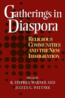

<body bgcolor="#FFFFFF" text="#000000" link="#0000FF" vlink="#CC0000" alink="#CC0000"><center><hr width="350" size="1" align="center" noshade>The new religious communities of the United States in their churches, mosques, temples, home meetings, and festivals, being built by immigrants<hr width="350" size="1" align="center" noshade><p><a href="https://cdcshoppingcart.uchicago.edu/Cart/ChicagoBook.aspx?ISBN=9781566396134&&PRESS=temple" target="_top">Buy this book!</a> | <a href="https://cdcshoppingcart.uchicago.edu/Cart/Cart.aspx?PRESS=temple" target="_top">View Cart</a> | <a href="https://cdcshoppingcart.uchicago.edu/Cart/Cart.aspx?PRESS=temple" target="_top">Check Out</a></p><p></p></center><!--none//--><h1>Gatherings in Diaspora</h1>
<H2>Religious Communities and the New Immigration</H2>
<h3>edited by R. Stephen Warner and Judith G. Wittner</h3>
<P>cloth 1-56639-613-1 $70.50, Apr 98, <FONT COLOR=#990033>Out of Stock Unavailable</FONT>
<br>paper 1-56639-614-X $38.95, Apr 98, <FONT COLOR=#990033>Available</FONT>
<br>Electronic Book 1-43990-152-X $38.95 <FONT COLOR=#990033>Out of Stock Unavailable</FONT>
<BR> 416 pp
6x9
3&nbsp;tables
</P><BLOCKQUOTE><I>"Historians of a social-scientific bent will appreciate the rhetorical and analytical precision of </I>Gatherings in Diaspora<I>."</I>
<br>&#151<b><I>Journal of American Ethnic History</I></b><I></I></BLOCKQUOTE>
<p><I>Gatherings in Diaspora</I> brings together the latest chapters in the long-running chronicle of religion and immigration in the American experience. Today, as in the past, people migrating to the United States bring their religions with them, and their religious identities often mean more to them away from home, in their diaspora, than they did before.
<p>This book explores and analyzes the diverse religious communities of post-1965 diasporas: Christians, Jews, Muslims, Hindus, Rastafarians, and practitioners of Vodou, from countries such as China, Guatemala, Haiti, India, Iran, Jamaica, Korea, and Mexico. The contributors explore how, to a greater or lesser extent, immigrants and their offspring adapt their religious institutions to American conditions, often interacting with religious communities already established. The religious institutions they build, adapt, remodel, and adopt become worlds unto themselves, congregations, where new relations are forged within the community&#151between men and women, parents and children, recent arrival and those longer settled.
<BR>&nbsp;<h2>Excerpt</h2><P>Excerpt available at <a href="http://www.temple.edu/tempress">www.temple.edu/tempress</a></p>
<BR>&nbsp;<h2>Reviews</h2>
<p>Read a <a href="../authors/1365_review.pdf">review</a> from <I>The American Journal of Sociology</I>, Volume 105.1 (July 1999), written by Matthew P. Lawson (pdf).
<p>Read a <a href="../authors/1365_review2.pdf">review</a> from <I>Contemporary Sociology</I>, Volume 28.4 (July 1999), written by Eugene Hynes (pdf).
<p>Read a <a href="../authors/1365_review3.pdf">review</a> from <I>Social Forces</I>, Volume 77.4 (June 1999), written by Steven J. Gold (pdf).
<p><i>"Seldom do volumes highlight the sources of their inspiration in such a straightforward manner as does </i>Gatherings in Diaspora<i>.... a complicated book with multiple agendas, but careful readers will benefit from the complexity and find a wealth of material for considering some of the most vital questions facing us as sociologists of religion today."</i>
<br>&#151<b><i><a href="http://www.findarticles.com/p/articles/mi_m0SOR/is_2_61/ai_63912437" target="new">Sociology of Religion</a></i></b>
<p><i>"...skilfully crafted collection....researchers will find this collection indispensable as a source of data and hypotheses about ethnic identity and religio-ethnic mobilisation in the USA. It will also prove invaluable to teachers of courses on ethnicity, migration and religion."</i>
<br>&#151<b><i>Journal of Ethnic and Migration Studies</i></b>
<BR>&nbsp;<h2>Contents</h2><P>
<p>Introduction &#150 R. Stephen Warner
<p><b>Part I: Religion and the Negotiation of Identities</b>
<br>1. Becoming American by Becoming Hindu: Indian Americans Take Their Place at the Multicultural Table &#150 Prema Kurien
<br>2. From the Rivers of Babylon to the Valleys of Los Angeles: The Exodus and Adaptation of Iranian Jews &#150 Shoshanah Feher
<p><b>Part II: Transnational Migrants and Religious Hosts</b>
<br>3. Santa Eulalia's People in Exile: Maya Religion, Culture, and Identity in Los Angeles &#150 Nancy J. Wellmeier
<br>4. The Madonna of 115th Street Revisited: Vodou and Haitian Catholicism in the Age of Transnationalism &#150 Elizabeth McAlister
<p><b>Part III: Institutional Adaptations</b>
<br>5. Born Again in East LA: The Congregation as Border Space &#150 Luís León
<br>6. The House That Rasta Built: Church-Building and Fundamentalism Among New York Rastafarians &#150 Randal L. Hepner
<br>7. Structural Adaptations in an Immigrant Muslim Congregation in New York &#150 Rogaia Mustafa Abusharaf
<p><b>Part IV: Internal Differentiation</b>
<br>8. Caroling with the Keralites: The Negotiation of Gendered Space in an Indian Immigrant Church &#150 Sheba George
<br>9. Competing for the Second Generation: English-Language Ministry at a Korean Protestant Church &#150 Karen J. Chai
<br>10. Tenacious Unity in a Contentious Community: Cultural and Religious Dynamics in a Chinese Christian Church &#150 Fenggang Yang
<p>Conclusion: A Reader among Fieldworkers &#150 Judith G. Wittner
<br>Project Director’s Acknowledgments
<br>About the Contributors and Editors
<br>Index
</P><BR>&nbsp;<H2>About the Author(s)</H2>
<P><B>R. Stephen Warner</B>, Professor of Sociology at the University of Illinois at Chicago, is the author of <I>New Wine in Old Wineskins: Evangelicals and Liberals in a Small-Town Church</I>.</P>
<P><p><b>Judith G. Wittner</b> is Associate Professor of Sociology and former Director of Women's Studies at Loyola University of Chicago.</P>
<BR><H2>Subject Categories</H2>
<p><A HREF="/tempress/religion.html" TARGET="_top">Religion</a>
<BR><A HREF="/tempress/race.html" TARGET="_top">Race and Ethnicity</a>
<BR><A HREF="/tempress/sociology.html" TARGET="_top">Sociology</a>
</p>
<p align="center"><a href="https://cdcshoppingcart.uchicago.edu/Cart/ChicagoBook.aspx?ISBN=9781566396134&&PRESS=temple" target="_top">Buy this book!</a> | <a href="https://cdcshoppingcart.uchicago.edu/Cart/Cart.aspx?PRESS=temple" target="_top">View Cart</a> | <a href="https://cdcshoppingcart.uchicago.edu/Cart/Cart.aspx?PRESS=temple" target="_top">Check Out</a></p><p><font face="Arial" size="1"><a href="copyright.html" onMouseOver="window.status='Web Copyright Policy';return true;" onMouseOut="window.status=''" title="Web Copyright Policy">&copy;</a> 2015 <a href="http://www.temple.edu" target="new" onMouseOver="window.status='Link to Temple University home page';return true;" onMouseOut="window.status=''" title="Link to Temple University home page">Temple University</a>. All Rights Reserved. http://www.temple.edu/tempress/titles/1365_reg.html</font></p>